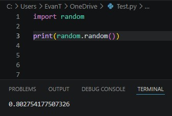

Outside Packages, often referred to as libraries, help python do things that it cannot easily do.
For example, if you want to get a random number, you cannot easily do that.
You would have to make your own function that would do that; which is clunky and complex.
That’s where an outside package could help you; the Random library.
The random library has a ton of functions that can help you, such as the random() function, which returns a float number between 0 and 1.

That is a small fraction of how useful modules are to programmers.
Now that we’ve seen how useful modules can be, how do you get them in your program?
Modules can be imported through the ‘import’ keyword, then specifying what module you want to import.
But what if you don’t want to import everything from that library?
If you just want one function, for example, the random() function, just put the keyword ‘from’, then the library the function is, the keyword ‘import’ and then the function you want to import.